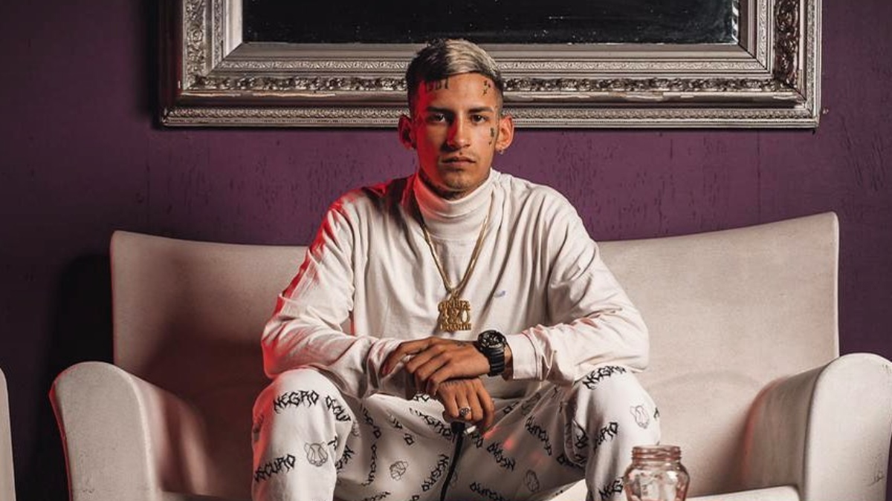

Do you recall Mo and Maya desperately wanting to share the Bizarrap videos with you and Jacky at Christmastime? This was the song that started it all. G$ posted the video for this in a post on our music Slack chat, and mentioned how he had been digging deep into the "Cumbia 420" rap scene coming out of Argentina. He had heard about it before ever listening, and then began his tour with rappers La Joaqui and L-Gante, two of the most notable members of the sound, along with producer Bizarrap.
My introduction to the "Cumbia 420" sound was actually through Bizarrap, who came up in my Spotify feed, presumably because I have listened to Latino rap music for a couple of years now on a regular basis. The song that came up for me was one of Bizarrap's sessions featuring an artist named Snow Tha Product. The Bizarrap beat and her incredible rapping had me looking for more of this stuff, and I discovered that Bizarrap had a huge catalog of these live sessions featuring different rappers and singers. All of them were young - Bizarrap himself is 23 but looks 16, L-Gante is only 21 - but most were very talented. Of all the talented artists featured on the Bizarrap sessions, it was this kid L-Gante that really blew me away. His deep, gravelly voice sounded like it was coming from someone way older, way uglier, and at times didn't sound like it could be coming from any human of any age or appearance.
So when G$ posted this La Joaqui video featuring L-Gante, I was ecstatic. The song was incredible - and I was able to share my L-Gante video from the Bizarrap sessions with G$, and then I learned that these folks were all part of this larger "Cumbia 420" scene, and were not from Mexico or Puerto Rico (as I had assumed) but Argentina! G$ came over a couple of weeks later, and it was like old times. We stayed up really late, listening and watching videos of this Argentinian rap collective and trading our various discoveries.
Interestingly, La Joaqui is the only Cumbia 420 artist that has not, as of yet, been featured on a Bizarrap session. Why that is is a mystery, but her song "Lassie" has all the best elements of what makes this Argentinian style so unique in the rap world, Bizarrap or no Bizarrap. Cumbia 420 is known for its weaving together of traditional Argentinian Cumbia styles with modern rap music, and you can hear it clearly on "Lassie", right from the first guitar strums. There's a folk element to the music that you don't hear in, say, a banger from the likes of Puerto Rican superstar Bad Bunny (see your 2019 mix). And on the rap side, as G$ succinctly put it, La Joaqui is NO JOKE. She is clearly L-Gante's equal on this song with her fantastic lilting flow and virtuosic rapping.
In the end, it's La Joaqui that put this song on this mix, and left Bizarrap off, despite his importance and him being mentioned so many times in these paragraphs. But that great beatmaker does deserve your ears (and in these cases, eyes, because his sessions are all video-based). Plus, if you missed these with Mo and Maya, or weren't able to really focus in amidst the chaos of Nina and the holidays, now you can check out two of my favorites - the aforementioned Snow Tha Product and L-Gante sessions. The technical aspect of their rapping is so impressive, it's really jaw dropping at times. The speed at which Snow can maintain with perfect diction is wild, and the way L-Gante plays with the tempo shifts is really unique. His physicality in how he delivers the lines is pretty captivating as well - great performer even when just standing at a mic.